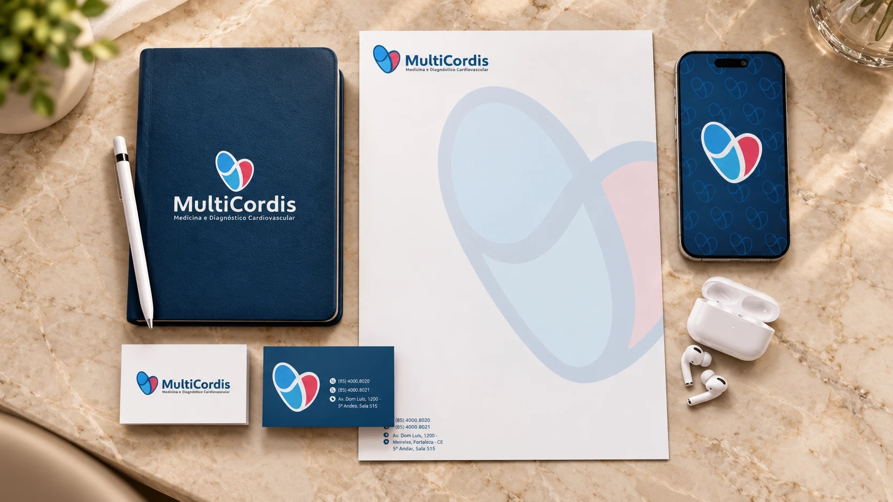
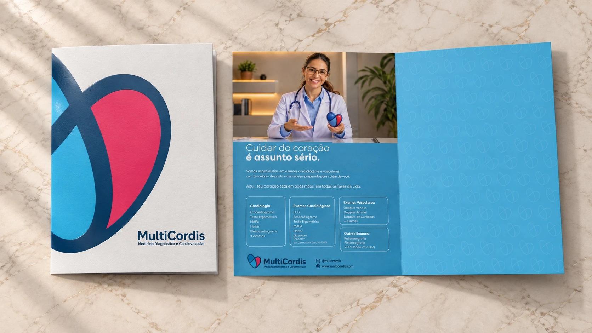
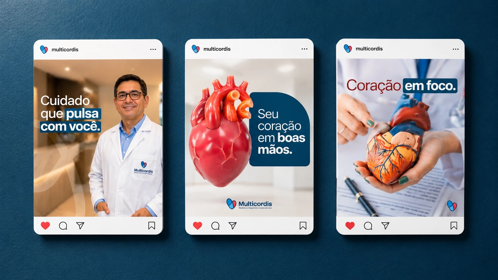

MultiCordis
← PortfólioA MultiCordis é uma clínica de medicina e diagnóstico cardiovascular em Fortaleza.
O símbolo é um coração assimétrico, formado por duas formas em azul e vermelho que se encaixam. Ele foge do tradicional do segmento e dá à clínica uma identidade própria.
A paleta combina azul-marinho, azul e vermelho. A identidade foi aplicada em papelaria, pasta institucional, jaleco bordado e posts no Instagram, com o símbolo também em padrão, para que a clínica tenha a mesma cara no consultório e nas redes.




Bora trocar
uma ideia?
Chama a gente no WhatsApp ou conta um pouco do projeto no formulário. Nosso primeiro papo é pelo Google Meet, dura uns 30 minutos e é gratuito.